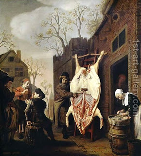

Bava Kamma 11 - The Value of a Carcass

How do we know that it is incumbent upon the owner of the pit to raise the dead ox from the pit and bring it to court for appraisal? Because the owner of the pit "... shall return money to the animal's owner and the carcass (will be his)"
Since the payment for the damage in this case is the difference between the live animal and the worth of the carcass, the court estimates the worth of the carcass. Similarly the courts evaluate the value of a broken object for a borrower, but not for a thief or robber.